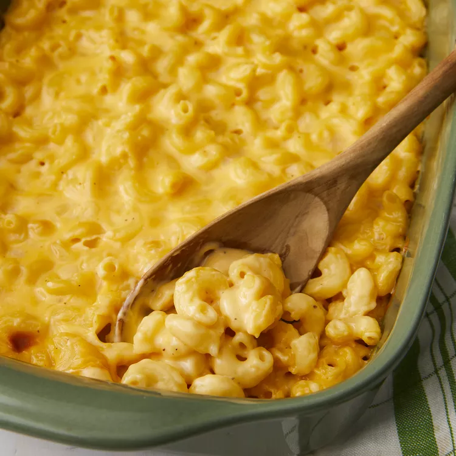

Description
This creamy baked mac and cheese recipe is sure to be a favorite of anybody! Trust me, I've had plenty of mac and cheese recipes over the years and this one is one of the best. So get all the ingredients together and get ready to cook it, you won't be disappointed.
Ingredients
- 2 tablespoons butter
- 2 tablespoons all-purpose flour
- 2 cups milk
- 3/4 teaspoon salt
- 1/2 teaspoon dry mustard
- 1/4 teaspoon ground black pepper
- 1 (8 ounce) package elbow macaroni
- 2 cups shredded sharp Cheddar cheese
- 1 (8 ounce) package processed American cheese, cut into strips
Steps
- Preheat oven to 350 degrees F (175 degrees C)
- Melt butter in a medium saucepan over medium heat. Stir in flour and cook for 1 minute, stirring constantly. Then stir in milk, salt, mustard and pepper. Cook, stirring frequently, until mixture boils and thickens.
- Meanwhile, bring a pot of lightly salted water to a boil. Add macaroni and cook until al dente, 8 to 10 minutes; drain.
- Add Cheddar and American cheeses to milk mixture; stir until cheese melts. Combine cheese sauce and macaroni in a 2-quart baking dish; mix well.
- Bake in preheated oven until hot and bubbly, about 30 minutes. Let cool 10 minutes before serving.